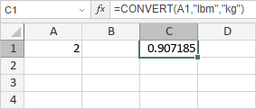

CONVERT funkcija
Funkcija CONVERT je jedna od inženjerskih funkcija. Koristi se za konvertovanje broja iz jednog mernog sistema u drugi. Na primer, CONVERT može da pretvori tabelu rastojanja izraženih u miljama u tabelu rastojanja izraženih u kilometrima.
Sintaksa
CONVERT(number, from_unit, to_unit)
Funkcija CONVERT ima sledeće argumente:
| Argument | Opis |
|---|---|
| number | Vrednost koju je potrebno konvertovati. |
| from_unit | Originalna merna jedinica. Tekstualni niz u navodnicima. Moguće vrednosti su navedene u tabeli ispod. |
| to_unit | Merna jedinica u koju treba konvertovati vrednost number. Tekstualni niz u navodnicima. Moguće vrednosti su navedene u tabeli ispod. |
Težina i masa
| Jedinica | Tekstualna vrednost |
|---|---|
| Gram | "g" |
| Slug | "sg" |
| Funta mase (avoirdupois) | "lbm" |
| U (atomska jedinica mase) | "u" |
| Unca mase (avoirdupois) | "ozm" |
| Gran | "grain" |
| Američki (kratki) hundredweight | "cwt" ili "shweight" |
| Imperijalni hundredweight | "uk_cwt" ili "lcwt" ("hweight") |
| Stone | "stone" |
| Ton | "ton" |
| Imperijalni ton | "uk_ton" ili "LTON" ("brton") |
Rastojanje
| Jedinica | Tekstualna vrednost |
|---|---|
| Metar | "m" |
| Statutarna milja | "mi" |
| Nautička milja | "Nmi" |
| Inč | "in" |
| Stopa | "ft" |
| Jard | "yd" |
| Angstrem | "ang" |
| Ell | "ell" |
| Svetlosna godina | "ly" |
| Parsek | "parsec" ili "pc" |
| Pica (1/72 inča) | "Picapt" ili "Pica" |
| Pica (1/6 inča) | "pica" |
| Američka geodetska milja (statutarna milja) | "survey_mi" |
Vreme
| Jedinica | Tekstualna vrednost |
|---|---|
| Godina | "yr" |
| Dan | "day" ili "d" |
| Sat | "hr" |
| Minut | "mn" ili "min" |
| Sekunda | "sec" ili "s" |
Pritisak
| Jedinica | Tekstualna vrednost |
|---|---|
| Paskal | "Pa" (ili "p") |
| Atmosfera | "atm" (ili "at") |
| mm živinog stuba | "mmHg" |
| PSI | "psi" |
| Torr | "Torr" |
Sila
| Jedinica | Tekstualna vrednost |
|---|---|
| Njutn | "N" |
| Dina | "dyn" (ili "dy") |
| Funta sile | "lbf" |
| Pond | "pond" |
Energija
| Jedinica | Tekstualna vrednost |
|---|---|
| Džul | "J" |
| Erg | "e" |
| Termodinamička kalorija | "c" |
| IT kalorija | "cal" |
| Elektronvolt | "eV" (ili "ev") |
| Konjska snaga-sat | "HPh" (ili "hh") |
| Vat-sat | "Wh" (ili "wh") |
| Stopa-funta | "flb" |
| BTU | "BTU" (ili "btu") |
Snaga
| Jedinica | Tekstualna vrednost |
|---|---|
| Konjska snaga | "HP" (ili "h") |
| Pferdestärke | "PS" |
| Vat | "W" (ili "w") |
Magnetizam
| Jedinica | Tekstualna vrednost |
|---|---|
| Tesla | "T" |
| Gaus | "ga" |
Temperatura
| Jedinica | Tekstualna vrednost |
|---|---|
| Stepen Celzijusa | "C" (ili "cel") |
| Stepen Farenhajta | "F" (ili "fah") |
| Kelvin | "K" (ili "kel") |
| Stepen Rankina | "Rank" |
| Stepen Reomira | "Reau" |
Zapremina (ili mere za tečnosti)
| Jedinica | Tekstualna vrednost |
|---|---|
| Kašičica | "tsp" |
| Moderna kašičica | "tspm" |
| Kašika | "tbs" |
| Tečna unca | "oz" |
| Šolja | "cup" |
| Američka pinta | "pt" (ili "us_pt") |
| Britanska pinta | "uk_pt" |
| Kvart | "qt" |
| Imperijalni kvart (U.K.) | "uk_qt" |
| Galon | "gal" |
| Imperijalni galon (U.K.) | "uk_gal" |
| Litar | "l" ili "L" ("lt") |
| Kubni angstrom | "ang3" ili "ang^3" |
| Američka naftna burad | "barrel" |
| Američki bušel | "bushel" |
| Kubne stope | "ft3" ili "ft^3" |
| Kubni inč | "in3" ili "in^3" |
| Kubna svetlosna godina | "ly3" ili "ly^3" |
| Kubni metar | "m3" ili "m^3" |
| Kubna milja | "mi3" ili "mi^3" |
| Kubni jard | "yd3" ili "yd^3" |
| Kubna nautička milja | "Nmi3" ili "Nmi^3" |
| Kubna pika | "Picapt3", "Picapt^3", "Pica3" ili "Pica^3" |
| Bruto registrovana tona | "GRT" ("regton") |
| Merna tona (transportna tona) | "MTON" |
Površina
| Jedinica | Tekstualna vrednost |
|---|---|
| Međunarodni aker | "uk_acre" |
| Američki geodetski/statutarni aker | "us_acre" |
| Kvadratni angstrom | "ang2" ili "ang^2" |
| Ar | "ar" |
| Kvadratne stope | "ft2" ili "ft^2" |
| Hektar | "ha" |
| Kvadratni inči | "in2" ili "in^2" |
| Kvadratna svetlosna godina | "ly2" ili "ly^2" |
| Kvadratni metri | "m2" ili "m^2" |
| Morgen | "Morgen" |
| Kvadratne milje | "mi2" ili "mi^2" |
| Kvadratne nautičke milje | "Nmi2" ili "Nmi^2" |
| Kvadratna pika | "Picapt2", "Pica2", "Pica^2" ili "Picapt^2" |
| Kvadratni jardi | "yd2" ili "yd^2" |
Informacije
| Jedinica | Tekstualna vrednost |
|---|---|
| Bit | "bit" |
| Bajt | "byte" |
Brzina
| Jedinica | Tekstualna vrednost |
|---|---|
| Admiralski čvor | "admkn" |
| Čvor | "kn" |
| Metri na sat | "m/h" ili "m/hr" |
| Metri u sekundi | "m/s" ili "m/sec" |
| Milje na sat | "mph" |
Takođe je moguće koristiti prefikse sa vrednostima from_unit i to_unit, npr. ako dodate prefiks "k" ispred jedinice "g", dobićete vrednost "kg" koja označava kilograme.
Prefiksi
| Prefiks | Množilac | Tekstualna vrednost |
|---|---|---|
| yotta | 1E+24 | "Y" |
| zetta | 1E+21 | "Z" |
| exa | 1E+18 | "E" |
| peta | 1E+15 | "P" |
| tera | 1E+12 | "T" |
| giga | 1E+09 | "G" |
| mega | 1E+06 | "M" |
| kilo | 1E+03 | "k" |
| hekto | 1E+02 | "h" |
| dekao | 1E+01 | "da" ili "e" |
| deci | 1E-01 | "d" |
| centi | 1E-02 | "c" |
| mili | 1E-03 | "m" |
| mikro | 1E-06 | "u" |
| nano | 1E-09 | "n" |
| piko | 1E-12 | "p" |
| femto | 1E-15 | "f" |
| atto | 1E-18 | "a" |
| zepto | 1E-21 | "z" |
| yocto | 1E-24 | "y" |
Binarni prefiksi
| Prefiks | Vrednost prefiksa | Tekstualna vrednost |
|---|---|---|
| yobi | 2^80 = 1 208 925 819 614 629 174 706 176 | "Yi" |
| zebi | 2^70 = 1 180 591 620 717 411 303 424 | "Zi" |
| exbi | 2^60 = 1 152 921 504 606 846 976 | "Ei" |
| pebi | 2^50 = 1 125 899 906 842 624 | "Pi" |
| tebi | 2^40 = 1 099 511 627 776 | "Ti" |
| gibi | 2^30 = 1 073 741 824 | "Gi" |
| mebi | 2^20 = 1 048 576 | "Mi" |
| kibi | 2^10 = 1024 | "ki" |
Napomene
Argumenti from_unit i to_unit moraju biti kompatibilni, tj. treba da pripadaju istoj vrsti mere.
Kako primeniti funkciju CONVERT.
Primeri
Slika ispod prikazuje rezultat koji vraća funkcija CONVERT.
